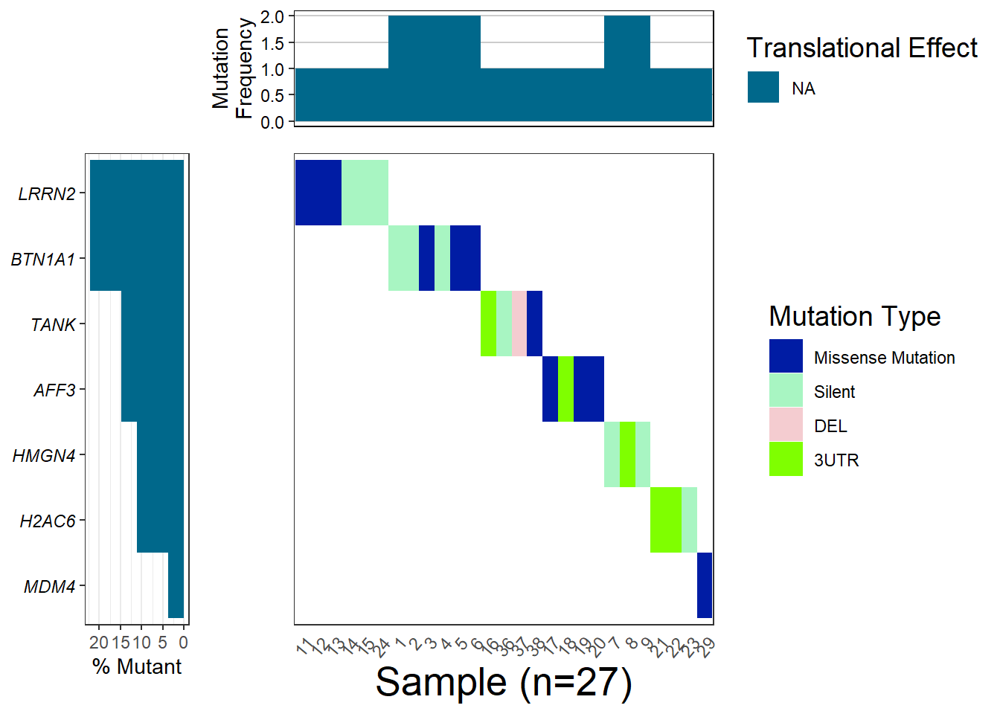
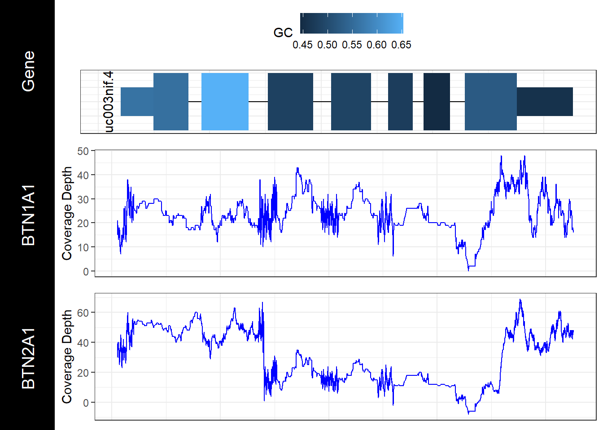

Chapter 10 GenVisR
10.1 Introduction to dataset
The scientists conducted a genome-wide association study and found mutations in specific regions of the genome that correlate with educational attainment. Found mutations are responsible for only two percent of the variation in the level of education and cognitive ability, but include “promising” for further research single-nucleotide polymorphisms (single-nucleotide polymorphisms, SNPs). Specifically, three independent mutations (rs9320913, rs11584700, rs4851266) are responsible for approximately 1 additional month of learning each.(rietveldGWAS126559Individuals2013?).
Studies were performed on data from Utah residents with Northern and Western European ancestry ((rietveldGWAS126559Individuals2013?)).
Daset comes form Supplementary Materials for GWAS of 126,559 Individuals Identifies Genetic Variants Associated with Educational Attainment https://www.science.org/doi/abs/10.1126/science.1235488 (Appendix)
The normal functioning of each cell depends on thousands of proteins that need to be to be in the right place at the right time. Sometimes mutations in genes prevent one or one or more proteins from working properly. By making a change in a gene, the mutation thereby changes the instructions for synthesizing the protein so that the protein no longer functions properly or is not synthesized at all.The sequence of a gene in DNA can be altered in several ways. Mutations in genes have different effects on health and depend on which genes they occurred in and whether the function of these proteins is altered. This type of Missense mutation is caused by the replacement of one DNA base for another (e.g., replacing T for C, or G for A), resulting in the substitution of one amino acid for another in the protein encoded by the gene. Here is one example of missene mutation from the study by Flint and Munafò(rietveldGWAS126559Individuals2013?).
10.2 Implementation GenVisR
Genomic Visualization and Interpretations Introduction to GenVisR
GenVisR is a package to interpret and visualize data received from NGS sequencing.There are many tools available for the analysis and visualization of these data. In this module we will focus on 3 functions : waterfall, genCov, and cnSpec. For the last module another dataset is used. The dataset for the spectrum plot comes from the GDC data portal, https://portal.gdc.cancer.gov/analysis_page?app=Downloads, file with name MATZO_p_TCGAb40_SNP_1N_GenomeWideSNP_6_E09_667812.grch38.seg.v2.txt.
Waterfall plots
The waterfall() function from the GenVisR package displays mutation in a heatmap-like structure with rows and columns denotating genes and samples.The function creates a plot of the mutational landscape from original data. (WaterfallFunctionIntroduction?)
First of all, we need to load the GenVisR library from bioconductor. We also need to load the mutation data. In the original dataset, only the gene name, mutation and position are present. We need to add some additional information from the Ensemble database, such as chromosome coordinates and gene annotation and to join this information to dataset.
Install required libraries
if (!requireNamespace("BiocManager", quietly = TRUE))
install.packages("BiocManager")
BiocManager::install("GenVisR")Data preproccesing. First we save all gene names from article to the list.
list_gen_names <- c("AFF3","BTN1A1", "H2AC6", "HMGN4", "MDM4", "LRRN2", "TANK" )
list_ensemble <- c("ENSG00000144218", "ENSG00000124557","ENSG00000180573", "ENSG00000182952", "ENSG00000198625","ENSG00000170382", "ENSG00000136560")Then we need to retrieve genomic coordinates and annotations for the further analyses. This is possible with biomaRt Bioconductor library
ensembl <- useMart("ensembl")
ensembl <- useDataset("hsapiens_gene_ensembl",mart=ensembl)
object_results2 <- getBM(attributes=c('ensembl_gene_id','chromosome_name', 'start_position', 'end_position','gene_biotype','hgnc_symbol'),
filters='hgnc_symbol',
values=list_gen_names,
mart=ensembl) Export Ensemble results to csv file.
| ensembl_gene_id | chromosome_name | start_position | end_position | gene_biotype | hgnc_symbol |
|---|---|---|---|---|---|
| ENSG00000144218 | 2 | 99545419 | 100192428 | protein_coding | AFF3 |
| ENSG00000292177 | HSCHR6_1_CTG1 | 46483 | 56605 | protein_coding | BTN1A1 |
| ENSG00000124557 | 6 | 26500303 | 26510425 | protein_coding | BTN1A1 |
| ENSG00000180573 | 6 | 26124145 | 26139116 | protein_coding | H2AC6 |
| ENSG00000292175 | HSCHR6_1_CTG1 | 84546 | 93113 | protein_coding | HMGN4 |
| ENSG00000182952 | 6 | 26538366 | 26546933 | protein_coding | HMGN4 |
| ENSG00000170382 | 1 | 204617170 | 204685738 | protein_coding | LRRN2 |
| ENSG00000198625 | 1 | 204516379 | 204558120 | protein_coding | MDM4 |
| ENSG00000136560 | 2 | 161136908 | 161236230 | protein_coding | TANK |
Join dataset export from biomart with list of genes/mutations.
## ensembl_gene_id chromosome_name start_position end_position gene_biotype
## 1 ENSG00000144218 2 99545419 100192428 protein_coding
## 2 ENSG00000292177 HSCHR6_1_CTG1 46483 56605 protein_coding
## 3 ENSG00000124557 6 26500303 26510425 protein_coding
## 4 ENSG00000180573 6 26124145 26139116 protein_coding
## 5 ENSG00000292175 HSCHR6_1_CTG1 84546 93113 protein_coding
## 6 ENSG00000182952 6 26538366 26546933 protein_coding
## hgnc_symbol
## 1 AFF3
## 2 BTN1A1
## 3 BTN1A1
## 4 H2AC6
## 5 HMGN4
## 6 HMGN4Make column names fit to join the ensemble dataset
names(data_set_appendix)[names(data_set_appendix) == 'Hugo_Symbol'] <- 'hgnc_symbol'
names(data_set_appendix)[names(data_set_appendix) == 'X'] <- 'sample'## hgnc_symbol sample Variant_Classification Position ensembl_gene_id
## 1 AFF3 18 3UTR 99545644 ENSG00000144218
## 2 AFF3 19 Missense_Mutation 99545817 ENSG00000144218
## 3 AFF3 20 Missense_Mutation 99545812 ENSG00000144218
## 4 AFF3 17 Missense_Mutation 99545531 ENSG00000144218
## 5 BTN1A1 3 Missense_Mutation 26505362 ENSG00000292177
## 6 BTN1A1 3 Missense_Mutation 26505362 ENSG00000124557
## chromosome_name start_position end_position gene_biotype
## 1 2 99545419 100192428 protein_coding
## 2 2 99545419 100192428 protein_coding
## 3 2 99545419 100192428 protein_coding
## 4 2 99545419 100192428 protein_coding
## 5 HSCHR6_1_CTG1 46483 56605 protein_coding
## 6 6 26500303 26510425 protein_codingSNP mutation in the genome, such as single nucleotide variants, insertions, or deletions, play a significant role in the development of genetic diseases. Identifying and summarizing these variants is frequently the initial stage in forming hypotheses about how these events contribute to the development and advancement of diseases. The purpose of the waterfall function is to effectively consolidate small variant (SNVs/indels) data at a cohort level. It is usefull for gaining a comprehensive understanding of the types of variations seen in a group. Additionally, waterfall plots provide insight into the burden of mutations, genes that are frequently mutated, the mutual exclusivity or co-occurrence of genes, and the correlation between variants and clinical information. (WaterfallFunctionIntroductiona?)
waterfall: function implementation on the chosen dataset
myHierarchy <- data.table("mutation"=c("Missense_Mutation", "Silent", "3’UTR", "DEL"), color=c("#001ca4", "#A8F5C2",
"#D69C4E", "#F4CCD0" ) )
colnames(full_join)## [1] "hgnc_symbol" "sample" "Variant_Classification"
## [4] "Position" "ensembl_gene_id" "chromosome_name"
## [7] "start_position" "end_position" "gene_biotype"names(full_join)[names(full_join) == 'hgnc_symbol'] <- 'gene'
names(full_join)[names(full_join) == 'Variant_Classification'] <- 'mutation'
names(full_join)[names(full_join) == 'X'] <- 'sample'
full_join <- full_join %>% janitor :: clean_names()
plotGenes=c("PIK3CA", "TP53", "USH2A", "MLL3", "BRCA1")
plotData2 <- Waterfall(full_join, mutationHierarchy = myHierarchy)
cnSpec
file_ngs_part1 <- "data_raw/genViz/MATZO_p_TCGAb40_SNP_1N_GenomeWideSNP_6_E09_667812.grch38.seg.v1.txt"
file_ngs_part2 <- "data_raw/genViz/MATZO_p_TCGAb40_SNP_1N_GenomeWideSNP_6_E09_667812.grch38.seg.v2.txt"
ngs_v1 <- readr::read_delim(file_ngs_part1, delim = "\t")## Rows: 7464 Columns: 6
## ── Column specification ────────────────────────────────────────────────────────
## Delimiter: "\t"
## chr (2): GDC_Aliquot, Chromosome
## dbl (4): Start, End, Num_Probes, Segment_Mean
##
## ℹ Use `spec()` to retrieve the full column specification for this data.
## ℹ Specify the column types or set `show_col_types = FALSE` to quiet this message.## Rows: 7464 Columns: 6
## ── Column specification ────────────────────────────────────────────────────────
## Delimiter: "\t"
## chr (2): GDC_Aliquot, Chromosome
## dbl (4): Start, End, Num_Probes, Segment_Mean
##
## ℹ Use `spec()` to retrieve the full column specification for this data.
## ℹ Specify the column types or set `show_col_types = FALSE` to quiet this message.## # A tibble: 6 × 6
## GDC_Aliquot Chromosome Start End Num_Probes Segment_Mean
## <chr> <chr> <dbl> <dbl> <dbl> <dbl>
## 1 3573fb47-be73-4d7c-a9c9-b0ba… 1 6.29e4 9.86e4 13 0.632
## 2 3573fb47-be73-4d7c-a9c9-b0ba… 1 2.59e5 7.93e5 13 0.152
## 3 3573fb47-be73-4d7c-a9c9-b0ba… 1 8.05e5 3.30e6 714 0.338
## 4 3573fb47-be73-4d7c-a9c9-b0ba… 1 3.30e6 5.05e6 1321 0.0421
## 5 3573fb47-be73-4d7c-a9c9-b0ba… 1 5.05e6 5.07e6 12 0.664
## 6 3573fb47-be73-4d7c-a9c9-b0ba… 1 5.08e6 5.19e6 87 0.0681colnames(ngsv1.2) <- c("sample", "chromosome", "start", "end", "probes", "segmean")
ngsv1.2 <- mutate(ngsv1.2, sample=str_sub(sample, start=32, end=36))genomeBoundaries <- aggregate(chromEnd ~ chrom, data=cytoGeno[cytoGeno$genome=="hg38",], max)
genomeBoundaries$chromStart <- 0
colnames(genomeBoundaries) <- c("chromosome", "end", "start")cnSpec(ngsv1.2, genome="hg38", CN_Loss_colour = "#add8e6",
CN_Gain_colour = "#A30000", CNscale="relative", y=genomeBoundaries )
Gen cov
## Loading required package: GenomicFeatures## Loading required package: BiocGenerics##
## Attaching package: 'BiocGenerics'## The following objects are masked from 'package:lubridate':
##
## intersect, setdiff, union## The following objects are masked from 'package:dplyr':
##
## combine, intersect, setdiff, union## The following objects are masked from 'package:stats':
##
## IQR, mad, sd, var, xtabs## The following objects are masked from 'package:base':
##
## anyDuplicated, aperm, append, as.data.frame, basename, cbind,
## colnames, dirname, do.call, duplicated, eval, evalq, Filter, Find,
## get, grep, grepl, intersect, is.unsorted, lapply, Map, mapply,
## match, mget, order, paste, pmax, pmax.int, pmin, pmin.int,
## Position, rank, rbind, Reduce, rownames, sapply, setdiff, sort,
## table, tapply, union, unique, unsplit, which.max, which.min## Loading required package: S4Vectors## Loading required package: stats4##
## Attaching package: 'S4Vectors'## The following objects are masked from 'package:lubridate':
##
## second, second<-## The following objects are masked from 'package:dplyr':
##
## first, rename## The following object is masked from 'package:tidyr':
##
## expand## The following objects are masked from 'package:data.table':
##
## first, second## The following object is masked from 'package:utils':
##
## findMatches## The following objects are masked from 'package:base':
##
## expand.grid, I, unname## Loading required package: IRanges##
## Attaching package: 'IRanges'## The following object is masked from 'package:lubridate':
##
## %within%## The following objects are masked from 'package:dplyr':
##
## collapse, desc, slice## The following object is masked from 'package:purrr':
##
## reduce## The following object is masked from 'package:data.table':
##
## shift## The following object is masked from 'package:grDevices':
##
## windows## Loading required package: GenomeInfoDb## Loading required package: GenomicRanges## Loading required package: AnnotationDbi## Loading required package: Biobase## Welcome to Bioconductor
##
## Vignettes contain introductory material; view with
## 'browseVignettes()'. To cite Bioconductor, see
## 'citation("Biobase")', and for packages 'citation("pkgname")'.##
## Attaching package: 'AnnotationDbi'## The following object is masked from 'package:dplyr':
##
## select## Loading required package: BSgenome## Loading required package: Biostrings## Loading required package: XVector##
## Attaching package: 'XVector'## The following object is masked from 'package:purrr':
##
## compact##
## Attaching package: 'Biostrings'## The following object is masked from 'package:base':
##
## strsplit## Loading required package: BiocIO## Loading required package: rtracklayer##
## Attaching package: 'rtracklayer'## The following object is masked from 'package:BiocIO':
##
## FileForFormaturl <- "data_raw/genViz/BTN1A1_cov_chr6.V1.txt"
covData <- read.csv(url, sep="\t", header=T)
colnames(covData) <- c("chromosome", "start", "end", "BTN1A1", "BTN2A1")
# create a function to split the data frame into lists of data frames
samples <- c("BTN1A1", "BTN2A1")a <- function(x, y){
col_names <- c("chromosome", "end", x)
y <- y[,col_names]
colnames(y) <- c("chromosome", "end", "cov")
return(y)
}
covData <- lapply(samples, a, covData)
names(covData) <- sampleschromosome <- as.character(unique(covData[[1]]$chromosome))
start <- as.numeric(min(covData[[1]]$end))
end <- as.numeric(max(covData[[1]]$end))genCov(x=covData, txdb=TxDbObject, gr=grObject, genome=genomeObject, cov_plotType="line", label_txtSize = 5)## Obtaining CDS Coordinates## 'select()' returned 1:many mapping between keys and columns## Obtaining UTR Coordinates## 'select()' returned 1:many mapping between keys and columns## Calculating transform## Mapping coverage data onto transformed gene-space
## NULL